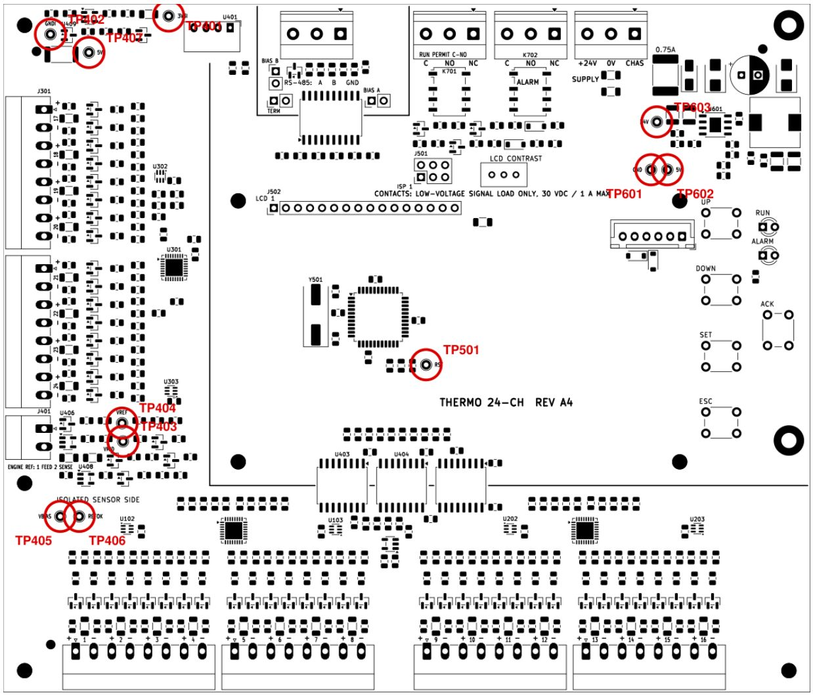

أماكن الأطراف على البوردة، وتوصيل كل طرف في اللوحة، وخريطة القنوات اللي بتتملي وقت التركيب.

| المكان على البوردة | الطرف | إيه هو |
|---|---|---|
| الحافة اللي فوق، من الشمال لليمين | J703 J701 J702 J601 | RS-485، كونتاكت التشغيل RUN PERMIT، كونتاكت الإنذار ALARM، الكهربا 24V |
| الحافة الشمال | J301 J302 J401 | حساسات 17-20 و 21-24، ومرجع الموتور FEED/SENSE |
| الحافة اللي تحت، من الشمال لليمين | J101 J102 J201 J202 | حساسات 1-4، 5-8، 9-12، 13-16 |
| النص | J502 J501 J503 | كابل الشاشة 16 سلك، فيشة البرمجة ISP، فيشة زراير الباب |
| اليمين | UP DOWN SET ESC ACK · RUN · ALARM | زراير على البوردة للبنش، ولمبة RUN، ولمبة ALARM |
البوردة في النص. كل مربع بره هو حاجة في اللوحة أو على الموتور. الخط البرتقالي في جانب الكهربا، والخط الأخضر في الجانب المعزول.
| الطرف | المكتوب على البوردة | يتوصّل في | ملاحظات |
|---|---|---|---|
| J601 | +24V · 0V · CHAS | +24V من البطارية بعد فيوز اللوحة، و0V سالب البطارية، وCHAS لبار الأرضي في جسم اللوحة | فيوز 1 أمبير بطيء (time-delay)، يتحمّل 80 فولت DC أو أكتر. البوردة بتاخد كهربتها من بطارية الموتور 24 فولت. |
| J701 | RUN PERMIT C · NO · NC | C و NO في دايرة السماح بالتشغيل | C-NO مقفول = الماكينة مسموح لها تشتغل. أي عطل أو فصل أو قطع كهربا يفتحه. 30 VDC / 1 A بالكتير. |
| J702 | ALARM C · NO · NC | لمبة أو سرينة الإنذار على C و NC | الريلاي شغال وقت ما مفيش إنذار، فـ C-NC مقفول = إنذار، وكمان لو البوردة مفصولة. 30 VDC / 1 A. |
| J703 | RS-485 A · B · GND | الـ PLC (لو موجود). على البنش: محوّل USB-RS485 | اختياري. A في A و B في B. لو مفيش اتصال، بدّل A و B. شيلد الكابل على بار اللوحة. |
| J401 | ENGINE REF 1 FEED · 2 SENSE | سلكين منفصلين لحد جسم الموتور، ويتلحموا مع بعض هناك بس | إجباري. على البنش: سلك قصير بين 1 و 2 في الفيشة. |
| J101-J302 | + n − | الحساسات، كل فيشة 4 قنوات | الموجب على الشمال من كل زوج. الشيلد على بار دخول اللوحة، مش على البوردة. |
| J502 | LCD 1 | الشاشة 20x4 على الباب، كابل 16 سلك | رجل 1 في رجل 1 من غير لف. الإضاءة والتباين من البوردة (LCD CONTRAST). |
| J503 | 6 pin XH | زراير الباب: 1 UP، 2 DOWN، 3 SET، 4 ESC، 5 ACK، 6 GND | كل زرار بين رجله ورجل 6. زرار ACK أحمر. الزراير اللي على البوردة شغالة معاهم. |
| J501 | ISP 1 | المبرمجة USBasp على البنش بس | رجل 1 (المربعة) عند الخط الأحمر في الكابل. شيل جمبر 5V من الـ USBasp. |
| JP731-733 | TERM · BIAS A · BIAS B | جمبرات RS-485 | على البنش: من غيرهم. في الموقع: TERM على آخر جهاز في الخط بس. |
مكان كل حساس واسمه وحدوده. نسخة منها تتحط جوّه اللوحة. أي قناة فاضية: النوع OFF.
| CH | الفيشة · الأطراف | مكان الحساس على الموتور | الاسم (6 حروف) | K / J / OFF | Alarm °C | Trip °C |
|---|---|---|---|---|---|---|
| 01 | J101 · 1+ 2− | |||||
| 02 | J101 · 3+ 4− | |||||
| 03 | J101 · 5+ 6− | |||||
| 04 | J101 · 7+ 8− | |||||
| 05 | J102 · 1+ 2− | |||||
| 06 | J102 · 3+ 4− | |||||
| 07 | J102 · 5+ 6− | |||||
| 08 | J102 · 7+ 8− | |||||
| 09 | J201 · 1+ 2− | |||||
| 10 | J201 · 3+ 4− | |||||
| 11 | J201 · 5+ 6− | |||||
| 12 | J201 · 7+ 8− | |||||
| 13 | J202 · 1+ 2− | |||||
| 14 | J202 · 3+ 4− | |||||
| 15 | J202 · 5+ 6− | |||||
| 16 | J202 · 7+ 8− | |||||
| 17 | J301 · 1+ 2− | |||||
| 18 | J301 · 3+ 4− | |||||
| 19 | J301 · 5+ 6− | |||||
| 20 | J301 · 7+ 8− | |||||
| 21 | J302 · 1+ 2− | |||||
| 22 | J302 · 3+ 4− | |||||
| 23 | J302 · 5+ 6− | |||||
| 24 | J302 · 7+ 8− |
PIN القائمة على بوردة جديدة: 0000، وأول ضبط بيطلب PIN جديد. اكتبه في مكان آمن. لو اتنسى: امسك ACK و SET مع بعض وانت بتشغّل البوردة، وبعدين SET. الـ PIN بيرجع 0000 والإعدادات بتفضل زي ما هي.